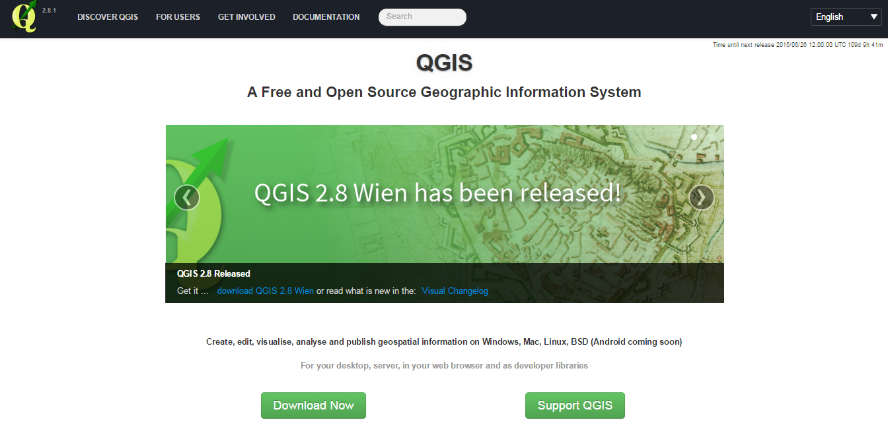
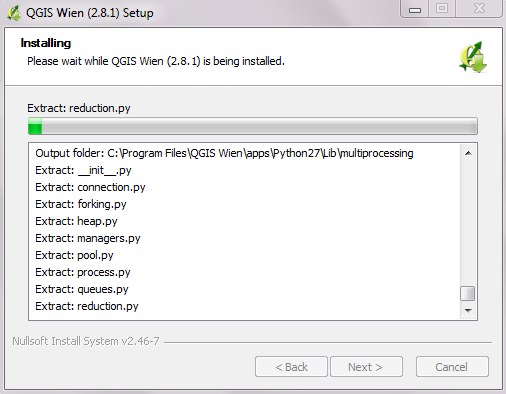
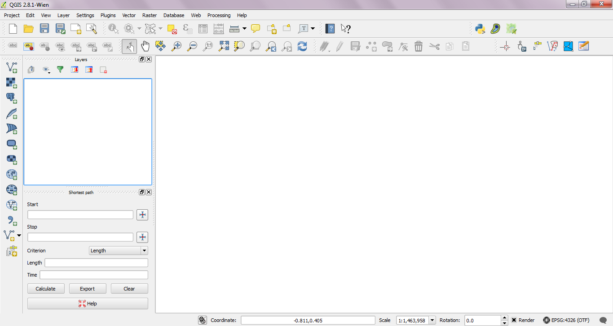
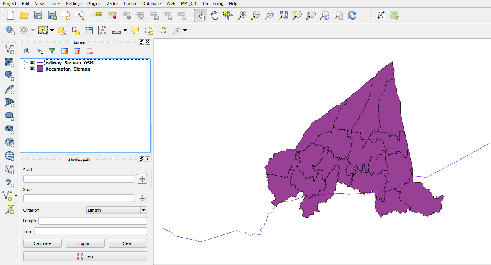
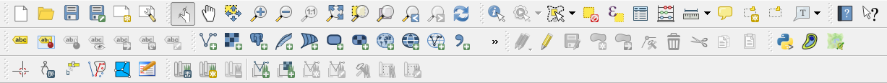
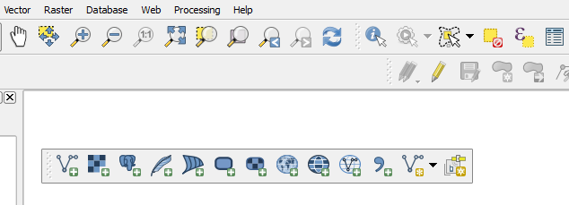
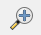
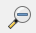
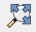
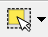

Module 3: The Basics of QGIS¶
Learning Objectives
Download QGIS
Install QGIS
Open a previously created QGIS project
Understand the layers panel
Access basic tools through the toolbar
Clean up the toolbar
Show a map in the map window
Get information on an active map through the status bar
In this module we begin using QGIS. We’ll see how to install the software and understand the layout, interface and core functions of the software. By the end of this module, you’ll be on your way to becoming a competent GIS user!
Note that if you have previously installed QGIS, feel free to skip ahead to section three. Otherwise, let’s start here and get QGIS installed.
1. Getting QGIS¶
Open your web browser and in the address bar at the top of the window, type qgis.org. Press Enter.
The QGIS website will look something like this:
Click Download Now.
If you are using Windows click QGIS Standalone Installer Version 2.8 (32 bit). Your exact version number may be different.
If you are not using Windows, select your operating system from the menu. Follow the installation instructions.
When the file is downloaded, run it and follow the instructions to install QGIS.
2. Installing QGIS¶
Open the folder where you have the QGIS installation file.
Run the installation file. If you are installing QGIS version 2.x, it should look like this:
Click Next.
Click I Agree to agree with the conditions in the licence agreement.
The next window asks where you would like to install QGIS. In most cases, the default should be fine. Click Next.
In the next window, Click Install without checking any of the boxes.
QGIS will begin to install. It may take a few minutes to complete.
Click Finish to complete the installation. Your computer will automatically reboot.
Now open QGIS from the Start Menu.
QGIS will look something like this:
3. Terminology of Geographic Information Systems (GIS)¶
Next we will open up a QGIS project, and take a look at the different pieces of the QGIS interface. If you installed InaSAFE previously, make sure it is closed by clicking on the X in the upper right corner of the InaSAFE panel. If it isn’t open or you haven’t installed it yet, carry on. We will come back to this later.
Click on the folder icon on the upper toolbar or go to
Navigate to the tutorial files and go into the
qgis/directory. Open the file namedsleman_2_2.qgs.
QGIS should now look something like the following image. Let’s pause for a moment and go over the various components of the QGIS interface.
Map canvas¶
This is the window where the map is shown. Our project has two different files open, one which shows districts of the Sleman regency, and another that shows the railway line running through the area. Both of these files are drawn together in the map canvas.
Layers panel¶
On the left side of QGIS is the layers panel.
This lists the layers, or files, that are loaded into our QGIS project.
In this project, we have two layers, Kecamatan_Sleman and
railway_Sleman_OSM.
The layers panel not only shows all the files that are currently open, it also determines the order that they will be drawn on the map canvas. A layer that is at the bottom of the list will be drawn first, and any layers above it will be drawn on top.
Click on the layer railway_Sleman_OSM and drag it below the layer named Kecamatan_Sleman.
Notice how the map canvas changes. The railway layer is now shown below the district layer, and part of the railway is now obscured. A map should never show railway hidden beneath district areas, so go ahead and move the layers back.
Uncheck the box next to a layer’s name. It will be hidden from the map canvas.
Expand collapsed items by clicking the arrow or plus symbol beside them. This will provide you with more information on the layer’s current appearance.
Right-click on a layer to view a menu with extra options. You’ll be using some of them before long, so take a look around!
Toolbars¶
At the top of QGIS are a large number of tools, which are contained within various “toolbars”. For example, the File toolbar allows you to save, load, print and start a new project. We already used one of these tools when we opened this project.
By hovering your mouse over an icon, the name of the tool will appear to help you identify each tool. The number of tools (buttons) can seem a bit overwhelming at first, but you will gradually get to know them. The tools are grouped into related functions on toolbars. If you look closely you can see a vertical array of ten dots to the left of each toolbar. By grabbing these with your mouse, you can move the toolbar to a more convenient location, or separate it so that it sits on its own.
If you feel overwhelmed by the number of toolbars, you can customise the interface to see only the tools you use most often, adding or removing toolbars as necessary.
To add or remove a toolbar, right-click on any of the toolbars, or go to .
Let’s remove some of the toolbars that we will not be using in this training, to make the interface a bit cleaner. Right-click on the toolbar, and uncheck the boxes next to the following toolbars:
Advanced Digitising
Database
GRASS
Label
Raster
Vector
After removing these toolbars and moving them around, your tools should look like this:
Even if they are not visible in a toolbar, all of your tools will remain accessible via the menus. For example, if you remove the File toolbar (which contains the Save button), you can still save your map by going to .
Status Bar¶
The status bar shows information about the current map. It allows you to adjust the map scale and see the mouse cursor’s coordinates on the map.
The coordinates of this map are the same type of coordinates that are recorded by GPS devices. The status bar shows the longitude and latitude of your mouse cursor.
This may not all be clear right now, but as you progress in your knowledge of GIS, this will make more and more sense.
4. Adding a vector layer¶
Now we will add an additional layer containing roads to our project.
Click on the Add Vector Layer button on the toolbar.
A dialog box will open. Click the Browse button.
Navigate to the file
qgis/Sleman/Jalan_Sleman_OSM.shp(you may need to unzip the fileSleman.zipfirst). Select the file and click Open.
Note
One of the most common file formats are shapefiles,
which end with the extension .shp.
Shapefiles are often used to save geodata, and are commonly used with
GIS applications like QGIS.
You should now see your new layer appear both in the map canvas and in the layers panel. It should be drawn above both the district and railway layers.
5. Basic QGIS tools¶
We’ve already taken a look at the QGIS toolbar and seen the tools for opening a project and adding a new layer. Here’s a list of some other commonly used tools. Feel free to play around with them if you like. The important thing for now is to start getting familiar with QGIS.
Toggle Editing |
Edit features in a layer |
|
Pan Map |
Drag the map into new location |
|
|  | Zoom In |
Zoom in on the map |
|  | Zoom Out |
Zoom out on the map |
|  | Zoom Full |
Zoom so that all layers fit in the map window |
Open Attribute Table |
Open a layer’s attribute table |
|
|  | Select Single Feature |
Select a feature in selected layer |